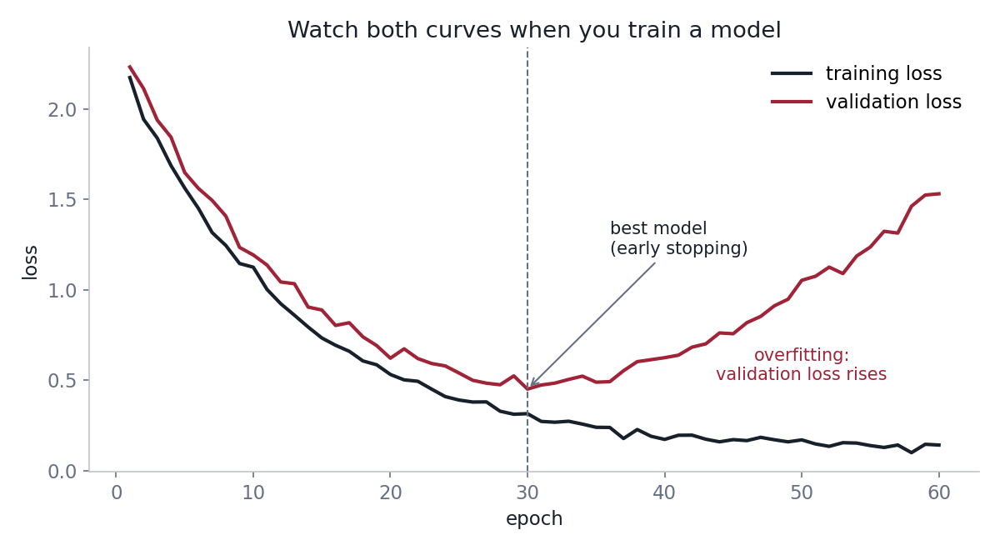
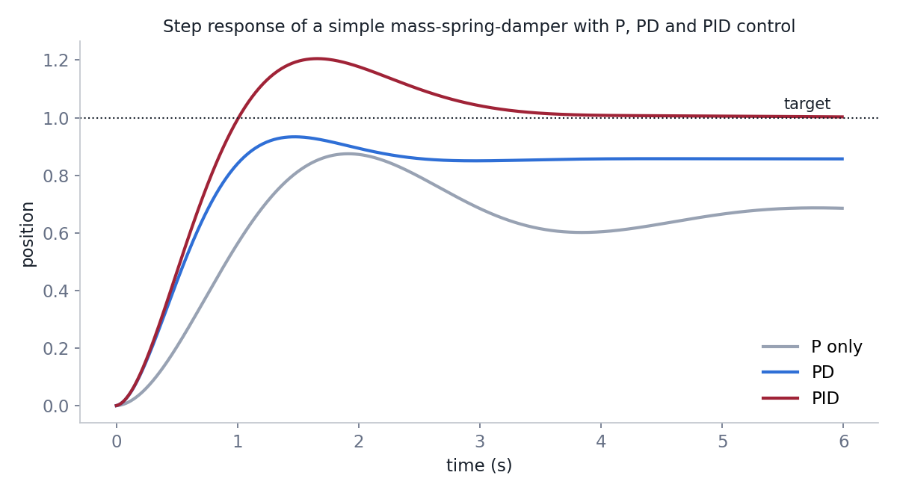

Learning roadmap for club members
A robot only works when mechanics, electronics, sensing and software work together, so every member needs a common foundation before going deep into one area. Nobody learns everything at once. This guide lists what to learn, in a sensible order, with free courses and short examples you can run yourself.
Plan on about four to six hours a week. Learn by building: after each topic, write a small program or make a small part, and keep your notes and code in a Git repository that you can show to your mentor.
The roadmap at a glance
Linux command line, Git and Python; linear algebra, calculus and probability. For every member, in the first one to two months.
How AI models learn, feedback control, ROS 2 and simulation, plus the basics of CAD and electronics.
The track of your technical group, applied in a real project with a mentor.
Stage 1: tools every member uses
Almost all robot software runs on Linux, is shared through Git and is first written in Python. Learn these early; they make every later topic easier. C++ follows once you are comfortable, because most real-time robot code is written in it.
- The Missing Semester of Your CS Education (MIT)Shell, editors, Git, debugging and automation in short lectures.
- Pro GitThe free book on Git; read chapters 1 to 3 first.
- The Python TutorialThe official introduction to Python.
- Learn C++A complete, free C++ course for when you are ready.
Stage 1: the maths behind robots
Linear algebra describes where things are and how they move. A robot's pose in the plane is a rotation and a translation, and both can be written as one matrix. Chaining these matrices gives the position of a gripper, a camera or a foot.
Calculus gives velocities and gradients, and probability lets a robot reason about noisy sensors. You do not need all of it before starting, but you will meet all three in every group.
- MIT 18.06SC Linear AlgebraGilbert Strang's classic course, with lecture videos and problem sets.
- Essence of Linear Algebra (3Blue1Brown)Short visual videos that build intuition.
- Convex Optimization (Boyd and Vandenberghe)Free book; useful later for estimation, planning and learning.
Stage 2: how an AI model learns
A neural network is a function with many adjustable weights \(\mathbf{w}\). Training means choosing the weights that make a loss function small. The loss measures how wrong the model is on the training data. For predicting a number, such as a distance, the usual loss is the mean squared error; for choosing a class, such as which object is in an image, it is the cross-entropy:
Here \(y_i\) is the correct answer, \(f_{\mathbf{w}}(\mathbf{x}_i)\) is the model's prediction for input \(\mathbf{x}_i\), and \(\hat{p}_{i,c}\) is the probability the model gives to class \(c\).
The weights are improved step by step with gradient descent: compute the gradient of the loss, which points uphill, and take a small step the other way. The step size \(\eta\) is the learning rate. Too small and training is slow; too large and it zig-zags or diverges.

In practice you rarely write gradients by hand. A framework such as PyTorch computes them automatically. This is the training loop you will see in almost every project:
import torch
from torch import nn
model = nn.Sequential(nn.Linear(4, 64), nn.ReLU(), nn.Linear(64, 1))
loss_fn = nn.MSELoss()
optimiser = torch.optim.Adam(model.parameters(), lr=1e-3)
for epoch in range(100):
for x, y in train_loader: # mini-batches of inputs and targets
prediction = model(x)
loss = loss_fn(prediction, y) # how wrong the model is
optimiser.zero_grad()
loss.backward() # gradients of the loss for every weight
optimiser.step() # one gradient descent stepAlways keep some data aside for validation. The training loss nearly always goes down; the validation loss tells you whether the model works on data it has not seen. When the validation loss starts to rise, the model is memorising the training data instead of learning, which is called overfitting.

- Machine Learning Specialization (Andrew Ng)The standard first course: regression, classification, neural networks.
- Neural Networks (3Blue1Brown)Visual explanation of networks, gradient descent and backpropagation.
- Practical Deep Learning for Coders (fast.ai)Code-first course; train real models from the first lesson.
- Dive into Deep LearningFree interactive book with runnable PyTorch code.
- PyTorch TutorialsOfficial tutorials, from tensors to full training pipelines.
- Stanford CS231nDeep learning for computer vision: detection, segmentation and more.
- Hugging Face LearnFree courses on transformers, computer vision and reinforcement learning.
- Spinning Up in Deep RLA clear introduction to reinforcement learning, used for walking robots.
Stage 2: feedback control
Every motor, drone and robot dog runs a feedback loop: measure the error between where you are and where you want to be, and correct it. The PID controller is the place to start. The proportional term reacts to the error now, the integral term removes a steady offset, and the derivative term damps oscillation.
Here \(e(t) = r(t) - y(t)\) is the error between the target \(r\) and the measurement \(y\), and \(u\) is the command sent to the motor.
class PID:
def __init__(self, kp, ki, kd, dt):
self.kp, self.ki, self.kd, self.dt = kp, ki, kd, dt
self.integral = 0.0
self.prev_error = 0.0
def update(self, target, measured):
error = target - measured
self.integral += error * self.dt
derivative = (error - self.prev_error) / self.dt
self.prev_error = error
return self.kp * error + self.ki * self.integral + self.kd * derivative
- Modern Robotics (Lynch and Park)Free book, videos and Coursera course on kinematics, dynamics and control.
- Underactuated Robotics (MIT)Russ Tedrake's course notes on control for legged and flying robots.
Stage 2: ROS 2 and simulation
ROS 2 is the software framework used on most research and competition robots. A robot program is split into nodes that exchange messages on topics: one node reads the LiDAR, another plans a path, another drives the motors. This minimal node publishes a message ten times a second:
import rclpy
from rclpy.node import Node
from std_msgs.msg import String
class Talker(Node):
def __init__(self):
super().__init__('talker')
self.publisher = self.create_publisher(String, 'chatter', 10)
self.create_timer(0.1, self.tick)
def tick(self):
self.publisher.publish(String(data='hello from the club robot'))
rclpy.init()
rclpy.spin(Talker())Test new behaviour in simulation before it runs on hardware. It is faster, and nothing breaks.
- ROS 2 TutorialsOfficial beginner and intermediate tutorials (Jazzy release).
- GazeboOpen-source robot simulator that works with ROS 2.
- Isaac LabGPU simulation for robot learning, used to train legged robots.
Stage 3: your technical group
After the foundations, go deep in your own group. Each group page lists its tasks, key equations and what is expected at each tier.
- Mechanical Design
- CAD from day one: work through the Onshape Learning Center or a SolidWorks or Fusion 360 tutorial, then statics, mechanics of materials and the kinematics chapters of Modern Robotics. Complete the Industrial Centre safety training before using machines.
- Electronics & Embedded
- Circuit basics, a first microcontroller project on STM32 or ESP32, then PCB design with the KiCad documentation, motor drivers and CAN bus.
- Perception & Sensors
- Camera models and calibration, Kalman filters and sensor fusion, LiDAR point clouds and SLAM in ROS 2; computer vision from CS231n.
- Software & AI
- C++ and ROS 2 in depth, path planning, model predictive control, deep learning with PyTorch and reinforcement learning in Isaac Lab.
How to get help
Ask early. Bring your question, what you tried and the error message to your group mentor or the bi-weekly training session. If you find a better course or tutorial, tell us so we can add it to this page.